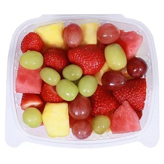

W E L C O M E !

"What's My Expiration?" is a multi-use platform that combines reminders related to food items for the average household while also creating use for food banks. While there are platforms that have certain features of this application towards simply expiration dates, this web application combines many of the uses found on singular websites and creates a unique experience for food banks to track their inventory. We have found the need to track when our food expires to avoid waste of resources as it often becomes difficult to track the needed resources in households and food banks alike.